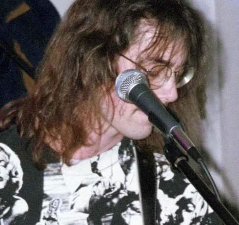

About Me
Hi my name is Cole Petrie and I am a Senior Audio Production major at Illinois State University. I have worked and played in a variety of different situations from recording studios to being a lead role in a muiscal. Currenty I run the local DIY house venue 'Happy Place' and play in local band 'Mulch'.